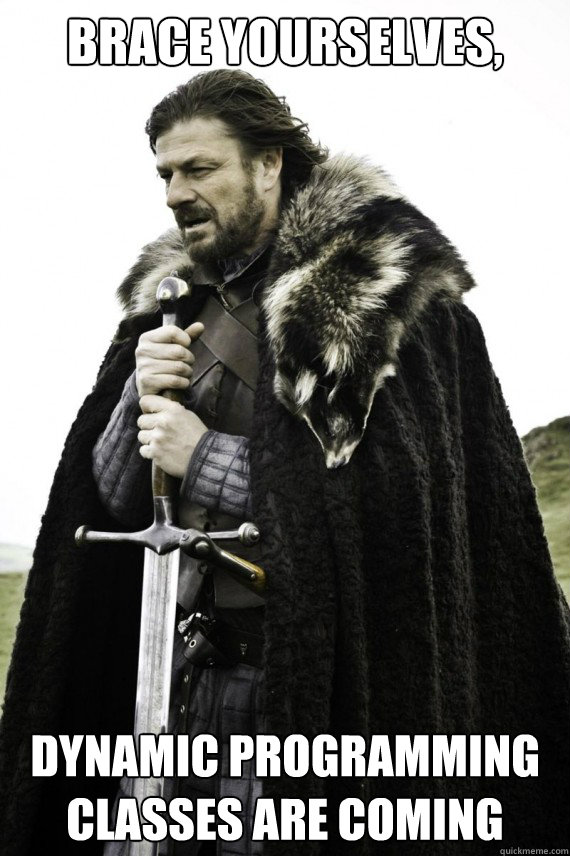

C15 Décomposition en sous problèmes
"Those who cannot remember the past are condemned to repeat it."
(in The Life of Reason, 1905)
Cours
Attention
Ce diaporama ne vous donne que quelques points de repères lors de vos révisions. Il devrait être complété par la relecture attentive de vos propres notes de cours et par une révision approfondie des exercices.
Travaux dirigés
Travaux pratiques
Humour d'informaticien
